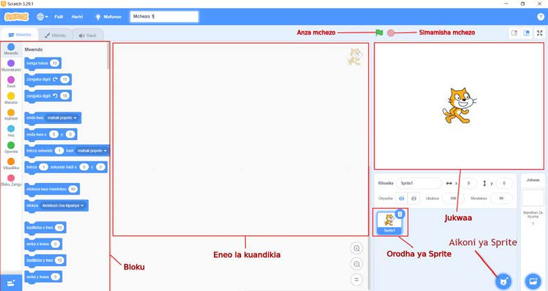

Sehemu za ‘Scratch au Quorum window’
‘Scratch au Quorum window’ ina sehemu kuu nne. Sehemu hizo ni eneo la kuandikia, bloku, jukwaa na orodha ya ‘Sprite’ kama inavyoonekana katika Kielelezo namba 21.

Maelezo ya programu fikivu ya Quorum: Sehemu za dirisha la Scratch au Quorum zimeonyeshwa na majina yake. Kuna bloku, eneo la kuandikia, jukwaa, orodha ya Sprite na aikoni ya Sprite.Kielelezo namba 21: sehemu za programu ya Scratch au Quorum.
(a)
Eneo la kuandikia: Mahali ambapo unaandika au kujenga programu yako kwa kuunganisha bloku mbalimbali.
(b)
Bloku: Inawezesha kupata na kuchagua bloku za kujenga programu yako.
(c)
Jukwaa: Mahali ambapo mchezo huonekana.
(d)
Orodha ya Sprite: Kiwakilishi kinachotumika katika kuonesha jinsi mchezo unavyofanyika.
(e)
Aikoni Sprite: Sehemu ya kuchagua ‘Sprite’
Kuunda michezo sahili ya kujongea
Scratch au Quorum inaweza kutumika kuandaa michezo inayomfanya Sprite kujongea jukwaani. Fuata hatua ambazo zimetolewa na Kazi ya kufanya namba 6.